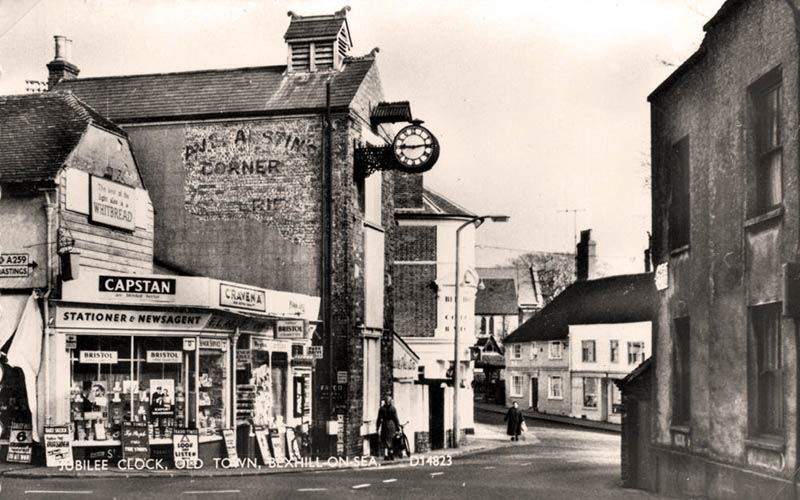
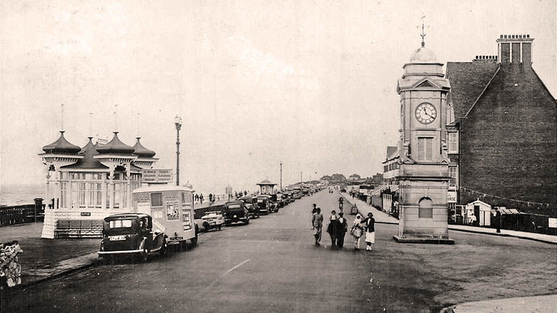
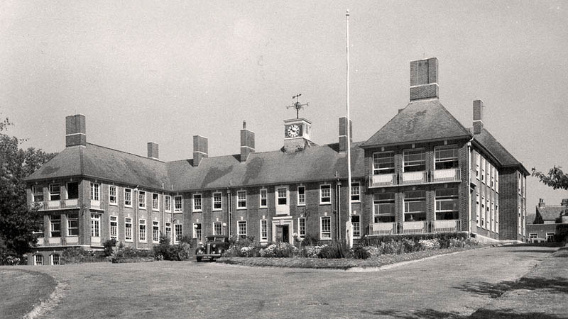
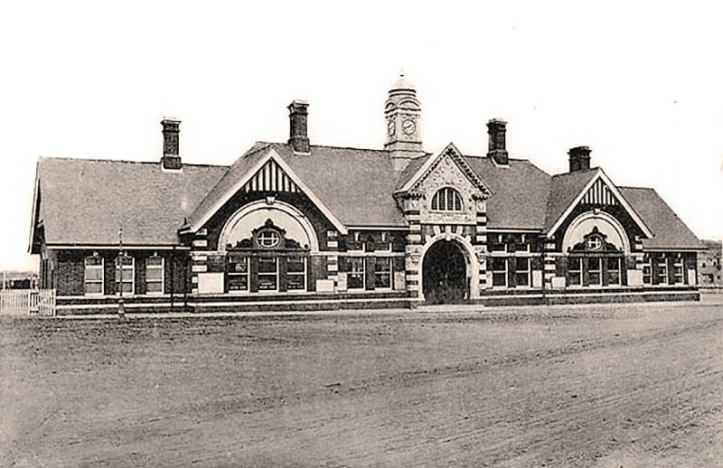

Street Clocks
There are quite a number of clocks dotted around Bexhill, click above to locate them all. Below shows four of our most famous time pieces.Jubilee Clock
Bexhill's oldest clock, unveiled on 20th June 1887 to mark Queen Victoria’s Golden Jubilee. On 20th June 1908 a building fire destroyed the clock's mechanism, thankfully the clock’s casing was not too badly damaged and it was was restored to its original state on King Edward VII’s birthday, 9th November 1908.
High Street, Old Town, c1960.
© Bexhill Museum
Clock Tower
The clock mechanism was made by Wright & Sons, a local watch and clockmaker. This the clock face is not original and attributed to Andrew Kemp and Norman Holmes.[22]
West Parade, c1920.
Bexhill Hospital
The clock in the tower was erected in memory of Charles Anson who was a cousin of King George V. Anson was considered Bexhill hospital’s 'founding father' and his wife ceremonially started the clock in October 1934.
Bexhill Hospital, Holliers Hill, c1950.
Bexhill West
Today an auction house, this was once Bexhill West train station built in 1902.
Bexhill West, Terminus Road, 1906.
© John Mann